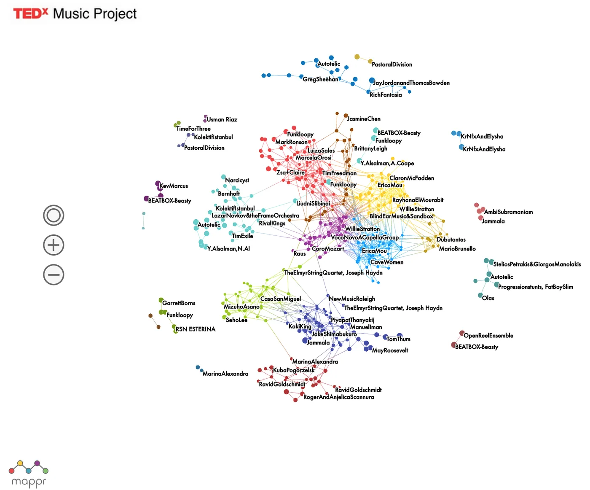

Blog · August 16, 2015
TEDx Music: A Network Visualization
Over the years, TEDx Music has grown from a small collection of a few songs to an exquisitely diverse curated catalog of over 600 tracks on SoundCloud. Getting music out there is no longer enough – it’s time to build software that facilitates discovery.
Drawing inspiration from network data visualization and systems ecology, we created an interactive map of a world of innovative music. In the talk below from TEDxIstanbul, I show the TEDx Music Map for the first time. We hope to release this soon so anyone can play with it.
What’s next for TEDx Music
TEDx Music releases new tracks every Tuesday. Once we refine the interactive visualization and open it to the public, we’ll begin creating a pipeline that automatically analyzes each new song using Spotify’s Echonest API, populating the viz with new nodes for each performance released. In the future, you’ll be able to see exactly where each new track sits relative to a global catalog.
We’re also working to bring a map-based visualization to life, enabling navigation by location. Imagine zooming into Japan and being able to hear all the music that has been performed in Tokyo.
As for artists, we plan to create a TEDx Musician Map, enabling exploration of the creative minds behind the music. In much in the same way that TED convenes people who share a love of ideas, it’s my hope that TEDx Music becomes a platform for we who love music.
Finally, in the interest of going beyond cool and into something scientific, I’m organizing collaborative research with Berklee College of Music to evolve this music dataviz prototype into a next generation tool through which we burst the filter bubble of music.
Think about it: how do you search for something if you don’t know it exists? This problem plagues the music industry. People discover by blogs, word of mouth, and radio station autoplay recommendations. But what if there was a better way? A way where you actively control your trajectory, where the unknown manifests right before your eyes? That’s where we’re heading. The future may well be an ode to awesome.

TEDx Music Network Viz, Alpha Version
Huge thanks to TED, TEDx, Zach Zimbler, Eric Berlow, Elena Crescia, Gaurav Gupta, Andrew Karnavas, and Tim Gnass. Also thank you to everyone else who has helped with TEDx Music over the years. And thank YOU for listening. The best is yet to come! Here’s to creating the future we imagine 🙂
Want to get involved in TEDx Music? Email me amy at tedxmusicproject dot com.
First published on my old blog, amyrobinson.wordpress.com, August 16, 2015.